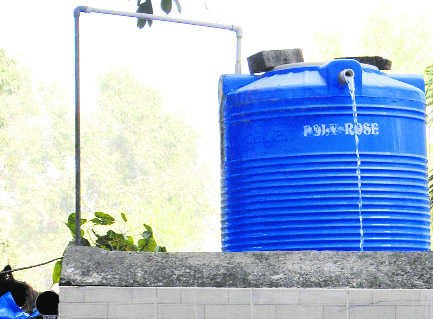
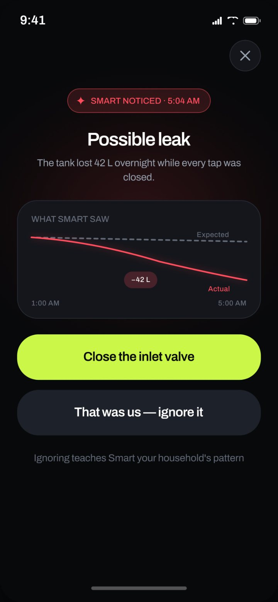

Home automation · Product · UI/UX
H2O Connect
A retrofit kit and app for rooftop water tanks, now in about 100 homes. It shows what the pump is about to do, proves what it just did, and hands control back in one tap.
Deliverables
- Desk research
- Product ecosystem
- Design system
- Mobile app
- Working prototype


See it in motion
One minute of the app in use: the tank, the fill range, Stop, the alerts, the three modes, usage, the leak alert and the two failure states.
Animated walkthrough of the H2o Connect app on a phone. The app opens on Home and the tank fills to 78%, 1,560 of 2,000 litres, with a live reading. A tap on the tank opens the fill range, where both levels are dragged to 90% and 25%, shown in litres too. On the Motor tab, one tap on Stop stops the motor with no confirmation and the app says it stays in Manual. A low water notification opens the alert, which offers to start the motor and to switch to Automatic. In Modes, a tap on Smart shows its prediction, learned from 34 days, and tonight’s off-peak plan. Usage shows the week’s water and electricity and every motor run with its cost and what started it. A possible leak notification opens the alert: the chart of expected and actual levels comes first, then 42 litres lost overnight, then two choices, and pausing automatic filling shows a toast with Resume. Finally Home shows Sensor not reporting and then No internet.
78%
1,560 of 2,000 L
Live · updated 9:41
Filling · 12 min leftMotor running · Automatic
04:12
0.75 kW · 4.2 units saved this week
This week
1,240 L
Fill range
Overhead tank
STOP FILLING
90%1,800 L
START FILLING
25%500 L
Drag either handle on the tank.
What this means
The motor runs about 18 minutes each time, roughly twice a day. A narrower range keeps the tank fuller but runs the motor more often.
Motor
Overhead tank
RUNNING · AUTOMATIC
04:12
of about 18 min
FLOW
22 L/min
POWER
0.75 kW
TODAY
3 runs
Dry-run protection
Cuts power if the sump runs empty
Modes
HOW AUTOMATIC WORKS
- Drops to 25%motor starts itself
- Reaches 90%motor cuts off itself
- Sensor goes quietyou get an alert
Eco mode
Runs only in off-peak hours · 4.2 units saved
Boost
Fills at maximum rate
Quiet hours
No motor between 9 PM and 1 AM
Water is low
Overhead tank is at 22%. The motor is off.
Usage
WATER USED
1,240 L
ELECTRICITY
8.4 units
RECENT MOTOR RUNS
Today, 6:42 AM
18 min · 720 L · ₹1.80
Started at 25%
Yesterday, 7:10 PM
12 min · 480 L · ₹1.20
Started from the unit
Monday, 6:38 AM
21 min · 840 L · ₹2.10
Started at 25%
Modes
PREDICTION
You’ll reach 25% at
4:10 PM tomorrow
LEARNED FROM 34 DAYS · 92% CONFIDENTTONIGHT’S PLAN
Fill 01:40 – 02:05
Off-peak tariff · after quiet hours
Why this time?
Let Smart shift fill times
Never during your quiet hours
Possible leak
The tank lost 42 L overnight while every tap was closed.
WHAT SMART SAW
Ignoring teaches Smart your household’s pattern
78%
1,560 of 2,000 L
Last reading 2 h ago
Offline · last update 9:12 AM
78%
1,560 of 2,000 L
Last update 9:12 AM
Motor running · Automatic
04:12
0.75 kW · 4.2 units saved this week
H2O CONNECTnow
Water is low
Overhead tank at 22%. The motor is off.
H2O CONNECTnow
Possible leak
42 L lost overnight while every tap was closed.
Automatic filling pausedResume
Jumps past the decisions to the ten screens
Water comes for a few hours. Nobody can see the tank.
Piped water arrives for a few hours a day. Homes store it in a rooftop tank and pump it up by hand, with no gauge and no warning.

Every overflow is water the household already paid to pump.
source: MIT Tata Center
<6hrs
of piped supply a day in many Indian cities
source: World Bank
2hrs
what most town homes receive on a normal day
source: Jal Jeevan Mission, 2024
73.9%
of rural homes now have a tap. The problem has moved indoors.

No gauge, so the first sign of full is water down the side.
the gap
People check the tank because nothing proves what it is doing. The product has to supply the proof.
how I worked
Desk research into piped supply and the float switches and app controllers on sale. No formal interviews or usability study: the design changes in the stories below came from my own reviews.
The kit and app were then installed and tested with Dwaj‑Tech in about 100 homes in Visakhapatnam, Narsapuram and Hyderabad. After that I reviewed my own screens and rebuilt them (decision 5).
Five decisions, in the order I made them
Each one runs the same way: what was there before, the options I weighed, what I chose and gave up, and what changed. The last one is me going back through my own work.
Decision 1 · strategic · weeks 1 and 2
Why I designed an app people should open less
Decision 2 · strategic · weeks 3 and 4
Why Stop never asks “Are you sure?”
Decision 3 · micro · week 4
Why the leak alert proves before it asks
Decision 4 · micro · week 5
Why the tank speaks in litres, not just percent
Decision 5 · iteration · after the installs
How reviewing my own app found 34 problems, and why I fixed twelve
Why I designed an app people should open less
Most apps want a daily open. This one works when the person who runs the pump stops climbing up to check the tank.
before
A remote control for the motor
The float switches and app controllers on sale could start and stop a pump. None could say what the tank was about to do, or prove what it had just done. So people kept checking by hand: listening for the overflow, climbing to the roof, switching off early.
options I weighed
- A remote for the motor
- What the products on sale already do. It saves the walk to the switch, not the climb to the roof.
- A fully automatic black box
- Nothing to learn and nothing to trust. The first silent failure sends people back to checking.
- A witness that can act
- Chosen. It shows what it is about to do, proves what it did, and stops in one tap.
decision
Not a controller. A witness that can act.
State and evidence come first, controls second. Every automatic action leaves a receipt, and one tap takes control back. Four principles hold every screen to that.
trade-off
More to show, less magic
Every automatic action now needs evidence and a receipt on screen. That costs space and design time a plain remote would not.
State before controls
rules out: a home screen that opens on a power button
Every action leaves a receipt
rules out: silent schedules and automation with no history
Colour means something
rules out: colour used only to fill space
The wall switch always wins
rules out: any flow that traps a household inside the app
Three visual directions were scored against the principles. None held all four, so the final design keeps one thing from each.

direction a
Ambient dark
Readable from across the room, but nothing could ever look urgent. Kept: the colour discipline.

direction b
Bento
Clear hierarchy, but colour was spent on decoration. Kept: the card structure.

direction c
Platform native
Nothing to learn, and nothing to remember. Kept: the plain labels.
After: the tank first, the controls second.

Home
Opens on the tank: level, litres, time to full, and how fresh the reading is. The motor card says what it is doing.

Usage
Every run is logged with what it cost and what started it.

Smart mode
Smart says what it plans to do tonight, and how sure it is.
result
In about 100 homes, with the app
Installed and tested with Dwaj‑Tech. The target is fewer than three app opens a week by week six, which would mean people have stopped checking. It has not been measured yet.
Why Stop never asks “Are you sure?”
Stop is the button people reach for when something already looks wrong. A confirmation dialog there costs seconds, and trust.
before
Stop sat below the fold
In my own review of the first layout, Stop needed a scroll on small phones, and it followed the usual pattern of confirming a destructive action. For a motor that may be running dry, both are a delay.
options I weighed
- Confirm before stopping
- The standard for destructive actions. It costs seconds when the motor may be running dry.
- Stop, then offer undo
- Kinder to mis-taps, but restarting a pump is not a neutral undo, and the bar covers the reading.
- One tap, no dialog, and the wall switch wins
- Chosen. A mis-tap costs one restart; a slow stop can cost a motor.
decision
One tap, no dialog, and the wall switch always wins.
Stop sits in the motor card on Home and runs full width on the Motor screen, labelled, in one style. The relay answers in under 200 ms, the app says “Manual until you switch back”, and the Manual switch on the unit overrides the app in hardware.
trade-off
Accidental stops can happen
A stray tap stops the motor and switches to Manual. I accepted that: restarting is one tap, and the app says why it stopped.

after · stop from every surface
- Phone
- In the motor card on Home, full width on the Motor screen
- Dynamic Island
- Two taps from any app
- Watch
- Where the thumb lands
- Kitchen display
- “Alexa, stop the pump”
- The unit
- A red ON and OFF button, and a Manual switch that overrides the app
result
Target: under 3 seconds to stop
The median time to stop the motor in a planned study, not measured yet. On the unit itself, the ON and OFF button and the Manual switch work with the phone or router down.
Why the leak alert proves before it asks
An alert that asks “Close the valve?” before it shows why gets dismissed, or believed without a reason.
before
The question came first
My first version led with the two buttons and put the evidence underneath. Reviewing it, I was asking people to act on a claim the app had not shown yet.
options I weighed
- Ask first, explain below
- My first version. Quick to act on, but it asks for trust before it earns it.
- Act on its own
- Shut off water without asking. Fast, but a false alarm at 5 AM leaves the family with no water.
- Evidence first, then two choices
- Chosen. Slower by one glance, and every answer teaches Smart.
decision
If Smart can’t explain why, it doesn’t act. It asks.
The chart of expected against actual comes first, then two choices. “That was us” is a full answer: it logs the event and teaches Smart the household’s pattern. Smart is a rule engine over 30 days of the home’s own data, not a chatbot or a trained model.
trade-off
Slower by one glance
The chart takes a moment to read before the buttons. For a possible leak, a few seconds matter less than a wrong shut-off.

the mess · a part that isn’t built
I designed for a valve the kit doesn’t have
The first alert’s main button was “Close the inlet valve”. The valve is still planned hardware, so in the homes where the kit is installed that button could never work. The alert now offers what the kit can do, pause automatic filling, with an undo. Homes with a valve will get “Close the inlet valve”.
result
Not measured yet
Every answer is logged, so a study can count how often households agree with what Smart saw.
Why the tank speaks in litres, not just percent
“78%” means little at the tap. “1,560 of 2,000 litres, full in 12 minutes” answers the question people actually ask.
before
One big percentage
Early screens led with a single percentage. In my own review, every reading needed a conversion: how many buckets is that, and how long until it’s full? The Automatic card had the same gap: it said “Automatic” without saying what it would do.
options I weighed
- Percent only
- Compact, and what most tank apps show. But nobody fills a bucket in percent.
- Litres only
- Concrete, but meaningless without knowing the size of the tank.
- Both, with time to full
- Chosen. Percent for the shape of the tank, litres and minutes for the question at the tap.
decision
Litres and minutes at equal weight, and settings that say what they will do.
Home shows litres beside the percentage and time to full in minutes. The fill range is set on the tank itself, and the Automatic card spells out both levels.
trade-off
More numbers on Home
Three readings where there was one. I keep them in one block so they read as a single answer.

Fill range
Both levels dragged on the tank, in percent and litres, with a line on what the choice costs.

Modes
The Automatic card spells out both levels: the motor starts at 25% and stops at 90%.
result
Nothing left to convert
On Home and Fill range every percentage sits beside litres, and every wait is in minutes. Not measured in a study yet.
How reviewing my own app found 34 problems, and why I fixed twelve
With the kit in about 100 homes, I went back through every screen against Nielsen’s ten heuristics and the Laws of UX. The polish was hiding problems.
before
A polished app with quiet contradictions
Quiet hours banned the motor at night while Smart planned a 1:40 AM fill. The tabs were icons with no labels. Stop on Home was a bare square. The leak alert offered a valve the kit doesn’t have, and nothing showed whether the reading was live.
options I weighed
- Rebuild to the letter of the review
- Fix all 34, including the lime colour and every number. Weeks of work, and the app would lose the look households already know.
- Leave it
- It works in homes today. But these contradictions are exactly what erodes trust.
- Fix what breaks trust, keep the signature
- Chosen. Twelve fixes, two new screens, three things kept on purpose.
decision
Fix what breaks trust. Keep what people already recognise.
Labels on every tab, a labelled Stop in one style, a live line on the reading, a cost and a cause on every run, a leak action the kit can actually do, and quiet hours that Smart never breaks.
trade-off
Three things I kept
The lime running card, Stop inside it, and the existing numbers. Lime now means “the motor”, not “press this”, and the numbers still don’t fully reconcile across screens. Both are on my list.
Before and after: the original screens, then the rebuilt ones.

before
Home
Icon-only tabs, a bare square for Stop, and no sign of whether 78% was live.
after
Home
Labelled tabs, a labelled Stop, a live line, and Fill now dimmed while the tank fills.

before
Possible leak
The main button closed a valve the installed kit doesn’t have.
after
Possible leak
Pause automatic filling, which the kit can do, and a shorter second choice.
And two states the app never had: when the sensor goes quiet, and when the internet drops.

Sensor not reporting
Automatic holds off until the sensor is back. The unit’s cut-offs still protect the motor.

No internet
The unit keeps running on its own, and Stop still works on home Wi‑Fi.
result
34 issues found, 4 of them major. 12 fixes built.
The two new screens answer the fear behind the whole product: automatic things break when nobody’s watching. Not tested with households yet.
The kit it runs on
A sonar sensor on the tank and a display unit beside the motor switch, built with Dwaj‑Tech and installed in about 100 homes. It works with the tank, pump and switch a home already has.
 1
2
3
4
1
2
3
4
working prototype · final design in progress
- DisplayLevel, volume and motor state, without a phone.
- Manual and Auto switchManual always wins, in hardware.
- ON and OFF buttonWorks with the phone or router down.
- WiringEnters beside the existing switch.
zero contact sensing
0corrosion
Sonar reads the air gap. Nothing touches the water.
automated motor control
20 to 40%
lower energy bills, estimated for large facilities.
safety · on the device
<200ms
Dry run, overflow and thermal cut offs. Needs no internet.
control · on the phone
<1s
Mode, levels, start and stop over the home network.
memory · in the cloud
30+days
History and the pattern Smart learns. Slows down, never fails.
Tank sensor
Sonar under the lid, magnetic mount.
In use
Display unit
Switches the motor, confirms it by current.
In use
Sump sensor
A dry run guard on the sump.
Planned
Inlet valve
Lets Smart close the inlet on a leak.
Planned
20min
to install
1step
needs an electrician
0
drilling or rewiring
joins the home over Matter
- Apple Home
- Alexa
- Google Home
- SmartThings
The ten screens
Every screen answers “what’s happening?” before it offers an action, including when the sensor or the internet drops out.
Home
The tank is the largest element and the only thing in blue. A live line says how fresh the reading is.
Fill range
Two levels, set once, in litres as well as percent.
Motor
“Running” is confirmed by current draw. Stop never asks twice.
Modes
Three equal modes, one tap apart. Quiet hours never clash with Smart.

Low water alert
Manual mode warns, but never acts.
Usage
Every run shows what it cost and what started it.
Smart mode
Every prediction shows its confidence.
Smart insight
Evidence first, then only what the installed kit can do.
Sensor not reporting
Automatic holds off until the sensor is back. The unit’s cut-offs still protect the motor.
No internet
The unit keeps running on its own, and Stop still works on home Wi‑Fi.
The tank leaves the app with you
A Live Activity keeps the level and the countdown beside the camera, with the motor one tap away.
compact · beside the camera
Level and time left
A ring fills with the tank on one side of the camera and the countdown runs on the other. It turns orange when the tank runs low.
expanded · one tap
Stop, start, switch mode
Auto, Manual and Smart sit beside the motor button. Each change confirms in the line under the timer, so the island never jumps away.
alerts · grow out of the island, then fold back
Water is low
Start motor, or Later
Tank full
Stopped at 90%, 1,800 L
Possible leak
Close inlet, or That was us
from any app
2taps
to stop the motor: the island, then Stop.
rules it keeps
- Only outside the app, as on iOS
- Auto on a low tank starts the motor
- Stop never asks twice
On an iPhone this is a Live Activity whose buttons run App Intents (iOS 17 and later). There a tap opens the app and a long press expands the island; the prototype expands on a tap so it works in a browser.
Every screen in the home can stop the pump
The same rules on the wrist, the speaker and the kitchen display.

Apple Watch · glance
Level and time to full. Stop where the thumb lands.

Apple Watch · alert
The evidence in one line, then the two choices.

Apple Watch · complication
The level stays on the watch face all day.

Galaxy Watch · status
An arc gauge suited to the round display.

Galaxy Watch · low water
The same words as the phone, one Start button.

Apple Watch · start
Low tank, motor off: Start is the only action.

Apple HomeView · Siri
Reads from across the kitchen. “Siri, stop the pump.”
Device: Apple HomeView, Apple Newsroom image. Screen: H2o Connect.

Echo Show · Alexa
“Alexa, how full is the tank?”

Nest Hub · Google Home
Status on the counter, with an off peak routine.
Anyone at home can check the level and stop the pump from any surface. Safety settings only change in the app.
Colour that means something
Five colour roles, one typeface and six component sets, with contrast measured against the app background.
Lime · the motor
- HEX
- #CBF848
- RGB
- 203, 248, 72
- Contrast
- 16.2 : 1 · AAA
Water
- HEX
- #2F6BFF
- RGB
- 47, 107, 255
- Contrast
- 4.4 : 1 · Large only
Text
- HEX
- #FFFFFF
- RGB
- 255, 255, 255
- Contrast
- 19.9 : 1 · AAA
Alert · low
- HEX
- #FFA53D
- RGB
- 255, 165, 61
- Contrast
- 10.2 : 1 · AAA
Alert · critical
- HEX
- #FF4D5E
- RGB
- 255, 77, 94
- Contrast
- 6.1 : 1 · AA
Text · muted
- HEX
- #99A1AE
- RGB
- 153, 161, 174
- Contrast
- 7.6 : 1 · AAA
Text · faint
- HEX
- #626A77
- RGB
- 98, 106, 119
- Contrast
- 3.6 : 1 · Restricted
On the home screen
type · archivo
- F/Hero52 / 56 · Bold
- 78%
- F/Number34 / 38 · Bold
- 04:12
- F/Headline26 / 32 · SemiBold
- Possible leak
- F/Title18 / 24 · SemiBold
- Tonight’s plan
- F/Body14 / 20 · Regular
- 1,560 of 2,000 litres
- F/Label12 / 16 · Medium
- Filling · 12 min left
app icon · ios, watchos, wear os
system rules
- 48 px targets, 56 px for Stop
- 28 px card radius
- 800 ms level easing
- 160 ms state change
- No colour only states
- No confirm on Stop
components · six sets, twenty variants

What’s real, and what’s next
The kit and app are in about 100 homes, but nothing here has been measured in a study yet. The numbers below are targets, set before the study so they can’t be chosen afterwards.
in homes now
~100homes
Kit and app installed and tested with Dwaj‑Tech in Visakhapatnam, Narsapuram and Hyderabad.
not done yet
- A usability study with households
- Measured results from the installs
- The sump sensor and the inlet valve
- Telugu and Android versions, for where the kit is installed
accessibility
48px
minimum touch target
accessibility
56px
for Stop, never confirmed
accessibility
200%
text size without breaking
accessibility
0
states shown by colour alone
edge states designed
11
What the app shows, and what the system does, when something goes wrong.
01
Sensor silent02
Battery low03
Power cut mid fill04
Running, not filling05
Two people act at once06
Smart still learning07
Tank drained on purpose08
Water in quiet hours09
No internet10
Motor overheats11
Phone replaced
- cuts power on the device
- warns and waits
- informs, nothing stops
target · happiness
4 of 5
would leave it running unattended by week 4
target · engagement
<3
app opens a week by week 6. Designed to fall.
target · adoption
85%
reach a first automatic fill within 24 hours
target · retention
70%
still automatic at day 60, after a fault
target · task success
<3 s
median time to stop the motor
planned study
8
households
6
tasks
2
week diary
None of these targets have been measured yet. The 20 to 40% energy figure is an estimate.
AppendixProcess: people, journey, plan, structure and directions
Who the product has to serve
One person carries the job; everyone else notices only when it fails. The personas and their quotes are assumptions built from desk research, not people I interviewed.
three rings
Primary
The pump keeper
Runs the motor and takes the blame.
Secondary
Everyone else at home
Find the problem at the tap, not the tank.
Tertiary
Trades, RWA, power company
Decide what can be installed and what power costs.
“I know the sound it makes when it’s nearly full. I don’t trust anything else.”
tests · trust
“If it can’t tell me why it did that, I’ll switch it off.”
tests · interoperability
“The switch is downstairs. That’s where I’ll be.”
tests · accessibility
One refill, as it happens today
An assumed pump keeper, Meera, built from desk research. Of the eight stages in a refill, two carry most of the pain: the wait and the climb.
“The tank’s nearly full, I can hear it.”
“Last time it ran dry, the motor burnt out.”
If I forget now, there’s no water at six.
Automatic things break when nobody’s watching.
Climbs to the terrace to look inside.
Switches off early on purpose.
Responsible by default.
Wary of anything that takes the switch away.
06:30
Supply arrives“Is it a supply day?”0 to 40 min
Notices it“Did someone switch it on?”+1 min
Walks to the switch“How long has it run?”+0 min
Motor on“Twenty minutes should do.”5 to 20 min · pain point
Waits and guesses“Is that our pump or the neighbour’s?”+15 min · pain point
Climbs to check“Better to look than flood the terrace.”+22 min
Switches off early“Full is a guess.”Next morning
Lives with it“Tomorrow I’ll start earlier.”
Six weeks, start to prototype
From desk research to a working prototype, before the installs began.
Phase 1Research
Phase 2Structure
Phase 3Design and prove
W1
W2
W3
W4
W5
W6
in scope
- Automatic, Manual and Smart
- 8 screens and 2 alerts
- Design system
- Hardware architecture
- Watch and smart home
- HTML prototype
left out on purpose
- First run pairing
- Multiple properties
- Billing
- Hindi UI
- Trained ML models
Five destinations, one level deep
The information architecture, and the three flows that carry the product.
-
HomeTab 1Fill now
- Level, litres, time to full
- Motor status
- This week
- Active alert
-
MotorTab 2Fill now
- Start and stop
- Power, run time, cost
- Faults
- Bypass at the switch
-
ModesTab 3
- Automatic
- Manual
- Smart
- Back to Manual
-
UsageTab 4
- Every fill and its cost
- Event log
- Leak records
- Export
-
SettingsTop bar
- Tanks and sensors
- Members
- Matter link
- Text size, language
Scroll sideways to see the whole map.
The daily fill, with nobody watching
- TriggerLevel drops below 25%
- 1Step 1Checks quiet hours and tariff
- 2Step 2Motor starts, confirmed by current
- 3Step 3Home shows level and time to full
- 4Step 4Stops at 90%
- OutcomeReceipt: 440 L · 22 min · ₹2.10
Something the system can’t explain
- Trigger42 L lost overnight, taps closed
- 1Step 1Compared with 34 days of history
- 2Step 2One notification at 5:04 AM
- EvidenceWhat Smart saw
- DecisionTwo choicesPause automatic fillingThat was us
- OutcomeLogged, and the pattern updates
Taking it back
- TriggerAny screen, any mode
- 1Step 1One tap on Stop, no dialog
- 2Step 2Relay responds in under 200 ms
- 3Step 3“Manual until you switch back”
- OutcomeAutomatic resumes only when asked
Wireframes and the scorecard
Greyscale wireframes fixed the hierarchy before any colour. The three visual directions in decision 1 were scored against the four principles like this.

Scroll sideways to see the whole sheet.
scored against the four principles
| Principle | A · Ambient dark | B · Bento | C · Platform native | Final |
|---|---|---|---|---|
| State before controls | Holds | Holds | Breaks | Holds |
| Every action leaves a receipt | Breaks | Breaks | Holds | Holds |
| Colour means something | Holds | Breaks | Not attempted | Holds |
| The wall switch always wins | Breaks | Breaks | Holds | Holds |
A tank that tells you what it’s about to do.
H2o Connect · Domestic water management · A product by Dwaj‑Tech · 2026